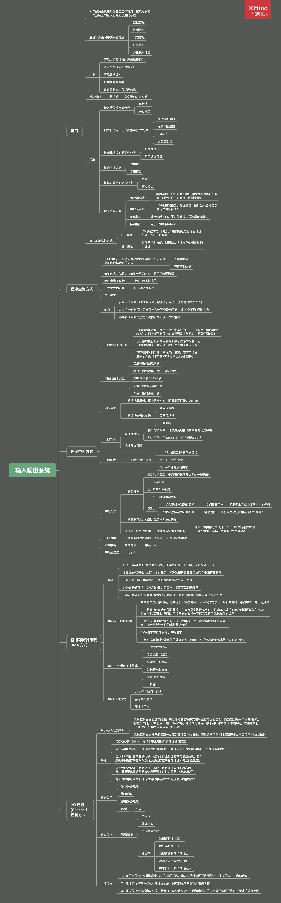

读书笔记之《计算机组成原理》9
~-~> 2020-12-21
输入输出系统

表 1
| 操作类型 | 多重中断方式 | 单重中断方式 |
|---|---|---|
| 中断隐指令 | 关中断保存断点及旧PSW取中断服务程序入口地址及新PSW | 关中断保存断点及旧PSW取中断服务程序入口地址及新PSW |
| 中断服务程序（准备部分） | 保护现场送新屏蔽字开中断 | 保护现场 |
| 中断服务程序（处理部分） | 服务处理（允许响应更高级别请求） | 服务处理（不允许响应更高级别请求） |
| 中断服务程序（结尾部分） | 关中断恢复现场及原屏蔽字开中断中断返回 | 恢复现场开中断中断返回 |
表 2
| 性能 / 通道类型 | 字节多路 | 选择 | 数组多路 |
|---|---|---|---|
| 数据宽度 | 单字节 | 不定长块 | 定长块 |
| 适用范围 | 大量低速设备 | 优先级高的高速设备 | 大量高速设备 |
| 工作方式 | 字节交叉 | 独占通道 | 成祖交叉 |
| 共享性 | 分时共享 | 独占 | 分时共享 |
| 选择设备次数 | 多次 | 一次 | 多次 |
⚠️ 请先安装一款邮件软件（部分浏览器可能不支持，请使用设备默认浏览器打开本页面）